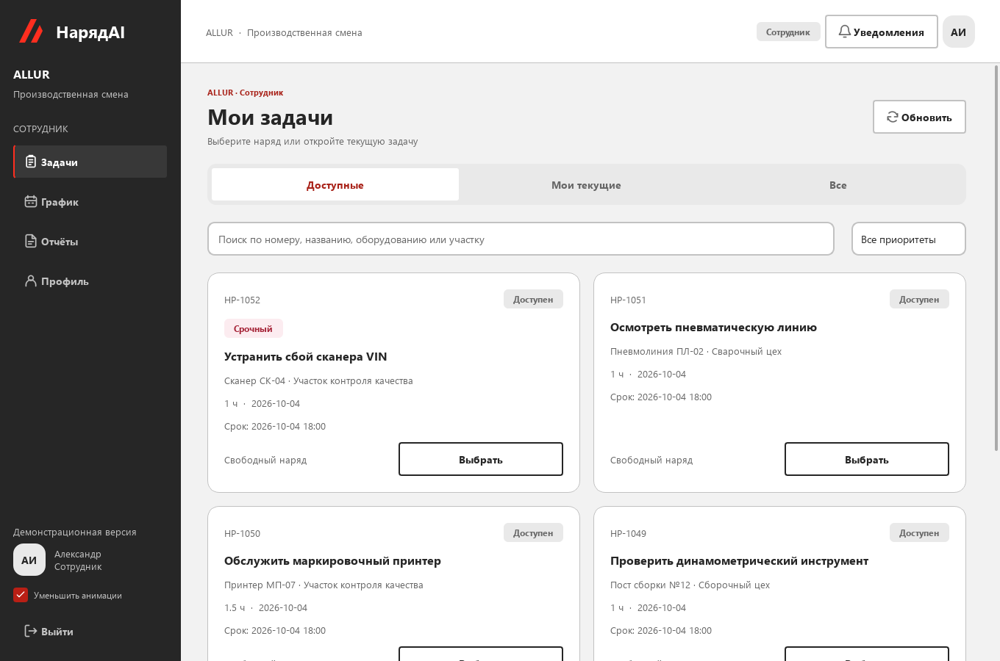

НарядAI 1.4 / Визуальный стиль
Allur: палитра и три концепции знака
Адаптация предоставленного Figma-концепта. Это проектные предложения, не утверждённый брендбук компании. SVG сохранены из макета без изменения геометрии.
Палитра 60 / 30 / 10
Светлые поверхности / графитовая структура / красные акценты. Функциональные подписи используют контрастный тёмный красный.
RGB 255 / 46 / 31
RGB 38 / 38 / 38
RGB 255 / 255 / 255
RGB 242 / 242 / 242
RGB 185 / 31 / 21
RGB 102 / 102 / 102
Примеры визуальных состояний кнопок; действия доступны в приложении. Контраст основного текста — 15,13:1; белой подписи на красной кнопке — 6,42:1.
Вектор движения
Рекомендуемый вариант для интерфейса


Контур связи
Компактный знак связи и точности


Архитектура A
Монограмма для маркировки и аватара


Масштаб и охранное поле
x = S/4. Минимальный знак: 16 × 16 px; полный горизонтальный логотип: 120 px по ширине; вертикальный: 96 px. Для приложения выбран «Вектор движения». Исходные размеры SVG сохранены, масштабирование пропорциональное.
Подробные правила, семантика цветов и анимации · Источник в Figma
Применение в приложении


